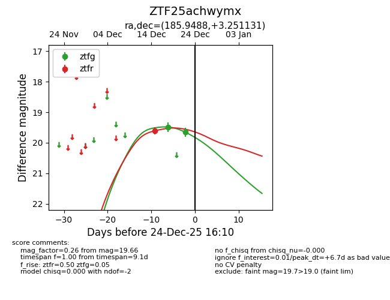
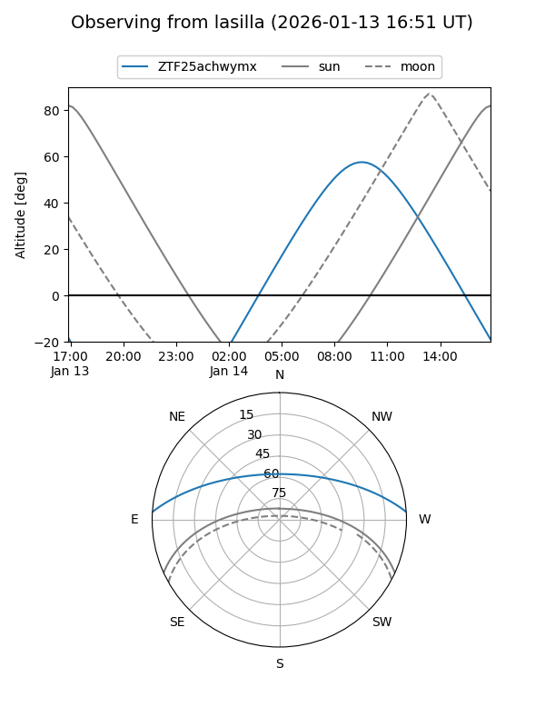
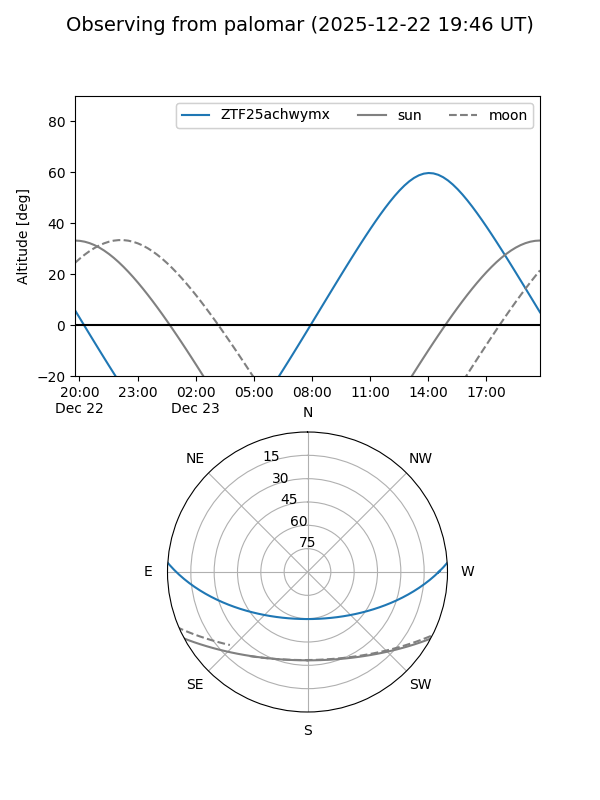
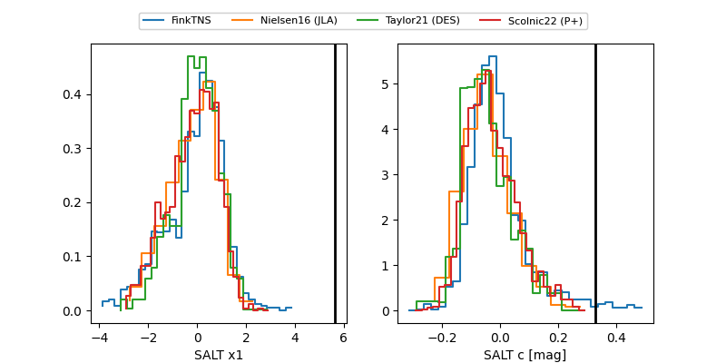

ZTF25achwymx
Target ZTF25achwymx at 2025-12-22 21:01
Aliases and brokers:
FINK: fink-portal.org/ZTF25achwymx
Lasair: lasair-ztf.lsst.ac.uk/objects/ZTF25achwymx
ALeRCE: alerce.online/object/ZTF25achwymx
alt names
ZTF25achwymx (ztf,fink_ztf)
Coordinates:
equatorial (ra, dec) = 185.9488,+3.25113
equatorial (HMS+DMS) = 12:23:47.71,+03:15:04.07
galactic (l, b) = (286.2736,+65.22498)
Flags:
Photometry:
last ztfg=19.66, ztfr=19.61
2 ztfg, 1 ztfr detections
Lightcurve

Visibility


Additional plots
